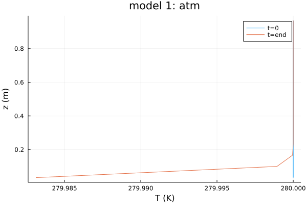
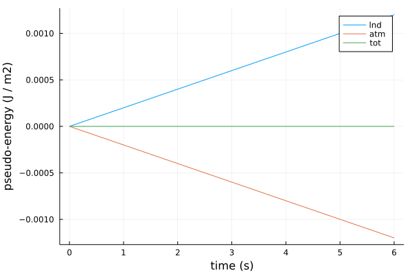
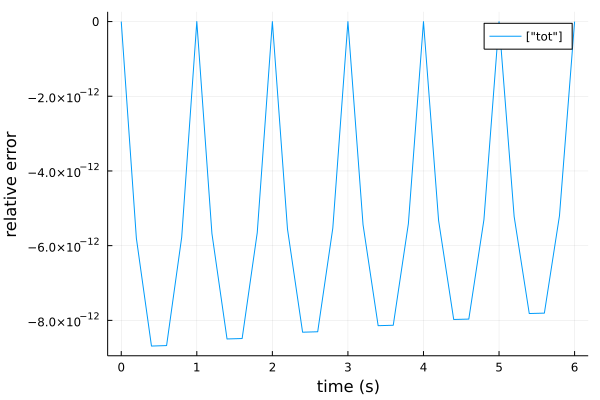

Heat Equation + Slab Tutorial
In this tutorial, we demonstrate simple sequential coupling of two PDE models using the ClimaCore.jl backends.
Model 1
Model 1 represents a simplified atmosphere (atm) and solves the heat equation in a one-column domain:
$\frac{∂ T}{∂ t} + ∇ ⋅ (-μ ∇T) = 0$
with top and bottom boundary conditions set to fixed-temperature (non-zero Dirichlet) and fixed-flux (non-zero Neumann) conditions, respectively:
$T_{top} = 280 K, \,\,\,\,\,\,\, \frac{∂ T_{bottom}}{∂ t} = - ∇ F_{sfc}$
where
tis timeμis the thermal diffusivityTis the temperatureF_sfcis the thermal boundary flux (see below for calculation)
Model 2
Model 2 assumes a simplified soil (lnd) domain to be a slab, represented by an ODE for its surface temperature:
$\frac{dT_{sfc}}{dt} = - (F_{accumulated} + G ) / h_{lnd}$
where
$F_{accumulated} = {F_{integrated}} / Δt_{coupler}$
where
Δt_coupleris the duration of the coupling cycleT_sfcis the temperatureh_lndis the slab thicknessF_integratedandF_accumulatedthermal boundary fluxes, respectively (see below for calculation)Grepresents soil physics, which we assume to be 0 for now
Coupling and Flux Calculation
We use this Model 1 (usually this is done by the model with the shortest timestep) to calculate and accumulate the downward surface fluxes, F_sfc:
$F_{sfc} = - λ (T_{sfc} - T1)$
$d(F_{integrated})/dt = F_{sfc}$
where
T1is the atm temperature near the surface (here assumed equal to the first model level)λa constant relaxation timescale
Note that in a more realistic setup the above equations would be weighted by their domains' densities and thermal heat capacities, so that the thermal flux would have the units of W m$^{-2}$. Here we assume these are unity for both domains.
Sequential coupling has the following steps:
- pre-Model 1: supply Model 1 with
T_sfcfor theF_sfccalculation; resetF_integratedto zero - run Model 1: step forward for all Model 1 timesteps within one coupling cycle using
F_sfcas the bottom boundary condition; accumulateF_integratedat each (sub-)step - post-Model 1: pass
F_integratedinto coupler and convert toF_accumulatedfor the correct units. - pre-Model 2: supply Model 2 with
F_accumulated - run Model 2: step forward for all Model 2 timesteps within one coupling cycle;
- post-Model 2: state variable,
T_sfcof Model 2 into coupler. - repeat steps 1-6 for all coupling timesteps.
Implementation
Loading Packages
First, we'll load our pre-requisites:
- load CliMA packages under development - you may need to add unregistered packages in Pkg, e.g.:
# import Pkg; Pkg.add(url="https://github.com/CliMA/ClimaCore.jl",rev="main")- load external packages:
import LinearAlgebra, UnPack
import ClimaCore: Fields, Domains, Topologies, Meshes, DataLayouts, Operators, Geometry, Spaces
using Base: show_supertypes
using OrdinaryDiffEq: ODEProblem, solve, SSPRK33
using Logging: global_logger
using TerminalLoggers: TerminalLogger
using RecursiveArrayTools
using OrdinaryDiffEq
using StatisticsDefine Parameters
- Global Constants
const FT = Float64;- Experiment-specific Parameters
parameters = (
# atmos parameters
zmin_atm = FT(0.0), # height of atm stack bottom [m]
zmax_atm = FT(1.0), # height of atm stack top [m]
n = 15, # number of elements in atm stack
μ = FT(0.0001), # diffusion coefficient [m^2 / s]
T_top = FT(280.0), # fixed temperature at the top of the domain_atm [K]
T_atm_ini = FT(280.0), # initial condition of at temperature (isothermal) [K]
# slab parameters
h_lnd = FT(0.5), # depth of slab layer [m]
T_lnd_ini = FT(260.0), # initial condition of at temperature (isothermal) [K]
# coupling parameters
λ = FT(1e-5), # transfer coefficient
)(zmin_atm = 0.0, zmax_atm = 1.0, n = 15, μ = 0.0001, T_top = 280.0, T_atm_ini = 280.0, h_lnd = 0.5, T_lnd_ini = 260.0, λ = 1.0e-5)Define Model Functions
- Model 1 (atm) Equations
"""
∑tendencies_atm!(du, u, (parameters, T_sfc), t)
Heat diffusion equation
dT/dt = ∇ μ ∇ T
where
T = 280 K at z = zmax_atm
dT/dt = - ∇ F_sfc at z = zmin_atm
We also use this model to calculate and accumulate the downward surface fluxes, F_sfc:
F_sfc = - λ * (T_sfc - T1)
d(F_integrated)/dt = F_sfc
where
F_integrated is reset to 0 at the beginning of each coupling cycle
T1 = atm temperature near the surface (here assumed equal to the first model level)
"""
function ∑tendencies_atm!(du, u, (parameters, T_sfc), t)
T = u.x[1] # u.x = vector of prognostic variables from DifferentialEquations
F_sfc = calculate_flux(T_sfc[1], parent(T)[1], parameters)
# set BCs
bcs_bottom = Operators.SetValue(Geometry.Cartesian3Vector(F_sfc)) # F_sfc is converted to a Cartesian vector in direction 3 (vertical)
bcs_top = Operators.SetValue(FT(parameters.T_top))
gradc2f = Operators.GradientC2F(top = bcs_top) # Dirichlet BC (center-to-face)
gradf2c = Operators.DivergenceF2C(bottom = bcs_bottom) # Neumann BC (face-to-center)
# tendency calculations
@. du.x[1] = gradf2c(parameters.μ * gradc2f(T)) # dT/dt
du.x[2] .= -F_sfc[1] # d(F_integrated)/dt
endMain.##438.∑tendencies_atm!- Model 2 (lnd) Equations
"""
∑tendencies_lnd!(dT_sfc, T_sfc, (parameters, F_accumulated), t)
Slab layer equation
lnd d(T_sfc)/dt = - (F_accumulated + G) / h_lnd
where
F_accumulated = F_integrated / Δt_coupler
"""
function ∑tendencies_lnd!(dT_sfc, T_sfc, (parameters, F_accumulated), t)
G = 0.0 # place holder for soil dynamics
@. dT_sfc = (-F_accumulated + G) / parameters.h_lnd
endMain.##438.∑tendencies_lnd!- Surface Flux Calculation (coarse bulk formula)
calculate_flux(T_sfc, T1, parameters) = -parameters.λ * (T_sfc - T1);- Coupler Communication Functions
These functions export / import / transform variables These functions are now just place holders for coupler transformations (e.g. regridding, masking, etc)
coupler_get_(x) = x;
coupler_put_(x) = x;Model Initialization
- initialize atm model domain and grid
domain_atm = Domains.IntervalDomain(
Geometry.ZPoint{FT}(parameters.zmin_atm),
Geometry.ZPoint{FT}(parameters.zmax_atm);
boundary_tags = (:bottom, :top),
);
mesh_atm = Meshes.IntervalMesh(domain_atm, nelems = parameters.n); # struct, allocates face boundaries to 5,6: atmos
center_space_atm = Spaces.CenterFiniteDifferenceSpace(mesh_atm); # collection of the above, discretises space into FD and provides coords- initialize prognostic variables, either as ClimaCore's Field objects or as Arrays
T_atm_0 = Fields.ones(FT, center_space_atm) .* parameters.T_atm_ini; # initiates a spatially uniform atm progostic var
T_lnd_0 = [parameters.T_lnd_ini]; # initiates lnd progostic var
ics = (; atm = T_atm_0, lnd = T_lnd_0)(atm = Float64-valued Field:
[280.0, 280.0, 280.0, 280.0, 280.0, 280.0, 280.0, 280.0, 280.0, 280.0, 280.0, 280.0, 280.0, 280.0, 280.0], lnd = [260.0])- specify timestepping information
stepping = (;
Δt_min = 0.02,
timerange = (0.0, 6.0),
Δt_coupler = 1.0,
odesolver = SSPRK33(),
nsteps_atm = 8, # number of timesteps of atm per coupling cycle
nsteps_lnd = 1, # number of timesteps of lnd per coupling cycle
);Define the sequential coupling loop
function coupler_solve!(stepping, ics, parameters)
t = 0.0
Δt_min = stepping.Δt_min
Δt_coupler = stepping.Δt_coupler
t_start = stepping.timerange[1]
t_end = stepping.timerange[2]
# init coupler fields
coupler_F_sfc = [0.0]
coupler_T_lnd = copy(ics.lnd)
# atmos copies of coupler variables
atm_T_lnd = copy(coupler_T_lnd)
atm_F_sfc = copy(coupler_F_sfc)
## SETUP ATMOS
# put all prognostic variable arrays into a vector and ensure that solve can partition them
T_atm = ics.atm
Y_atm = ArrayPartition((T_atm, atm_F_sfc))
prob_atm = ODEProblem(∑tendencies_atm!, Y_atm, (t_start, t_end), (parameters, atm_T_lnd))
integ_atm = init(prob_atm, stepping.odesolver, dt = Δt_min, saveat = 10 * Δt_min)
# land copies of coupler variables
T_lnd = ics.lnd
lnd_F_sfc = copy(coupler_F_sfc)
## SETUP LAND
prob_lnd = ODEProblem(∑tendencies_lnd!, T_lnd, (t_start, t_end), (parameters, lnd_F_sfc))
integ_lnd = init(prob_lnd, stepping.odesolver, dt = Δt_min, saveat = 10 * Δt_min)
# coupler stepping
for t in (t_start:Δt_coupler:t_end)
# STEP ATMOS
# pre_atmos
integ_atm.p[2] .= coupler_get_(coupler_T_lnd) # integ_atm.p is the parameter vector of an ODEProblem from DifferentialEquations
integ_atm.u.x[2] .= [0.0] # surface flux to be accumulated
# run atmos
# NOTE: use (t - integ_atm.t) here instead of Δt_coupler to avoid accumulating roundoff error in our timestepping.
OrdinaryDiffEq.step!(integ_atm, t - integ_atm.t, true)
# post_atmos
coupler_F_sfc .= coupler_put_(integ_atm.u.x[2]) / Δt_coupler
# STEP LAND
# pre_land
lnd_F_sfc .= coupler_get_(coupler_F_sfc)
# run land
OrdinaryDiffEq.step!(integ_lnd, t - integ_lnd.t, true)
# post land
coupler_T_lnd .= coupler_put_(integ_lnd.u) # update T_sfc
end
return integ_atm, integ_lnd
end;Run the Coupler Model Simulation
integ_atm, integ_lnd = coupler_solve!(stepping, ics, parameters);
sol_atm, sol_lnd = integ_atm.sol, integ_lnd.sol;Postprocessing and Visualization
Each integrator output (sol_atm, sol_lnd), contains the DifferentialEquations variable .u (the name is hard coded). If ArrayPartition was used for combining multiple prognostic variables, u will include an additional variable x (also hard coded) parent() accesses the Field values. So, for example, the structure of u from Model 1 is:
parent(sol_atm.u[<time-index>].x[<ArrayPartition-index>])[<z-index>,<variable-index>]
ENV["GKSwstype"] = "nul"
import Plots
Plots.GRBackend()
show_plots = isdefined(Main, :SHOWPLOTS) ? SHOWPLOTS : true
path = joinpath(dirname(@__FILE__), "images/")
mkpath(path);- Vertical profile at start and end
t0_ = parent(sol_atm.u[1].x[1])[:, 1];
tend_ = parent(sol_atm.u[end].x[1])[:, 1];
z_centers = parent(Fields.coordinate_field(center_space_atm))[:, 1];
show_plots ?
Plots.png(
Plots.plot(
[t0_ tend_],
z_centers,
title = "model 1: atm",
labels = ["t=0" "t=end"],
xlabel = "T (K)",
ylabel = "z (m)",
),
joinpath(path, "tc1_f1.png"),
) : nothing
- Conservation: absolute "energy" of both models with time
convert to the same units (analogous to energy conservation, assuming that is both domains density=1 and thermal capacity=1)
lnd_sfc_u_t = [u[1] for u in sol_lnd.u] .* parameters.h_lnd;
atm_sum_u_t = [sum(parent(u.x[1])[:]) for u in sol_atm.u] .* (parameters.zmax_atm - parameters.zmin_atm) ./ parameters.n;
v1 = lnd_sfc_u_t .- lnd_sfc_u_t[1];
v2 = atm_sum_u_t .- atm_sum_u_t[1];
show_plots ?
Plots.png(
Plots.plot(
sol_lnd.t,
[v1 v2 v1 + v2],
labels = ["lnd" "atm" "tot"],
xlabel = "time (s)",
ylabel = "pseudo-energy (J / m2)",
),
joinpath(path, "tc1_f2.png"),
) : nothing
- Conservation: relative error with time
total = atm_sum_u_t + lnd_sfc_u_t;
rel_error = (total .- total[1]) / mean(total);
show_plots ?
Plots.png(
Plots.plot(sol_lnd.t, rel_error, labels = ["tot"], xlabel = "time (s)", ylabel = "relative error"),
joinpath(path, "tc1_f3.png"),
) : nothing
This page was generated using Literate.jl.